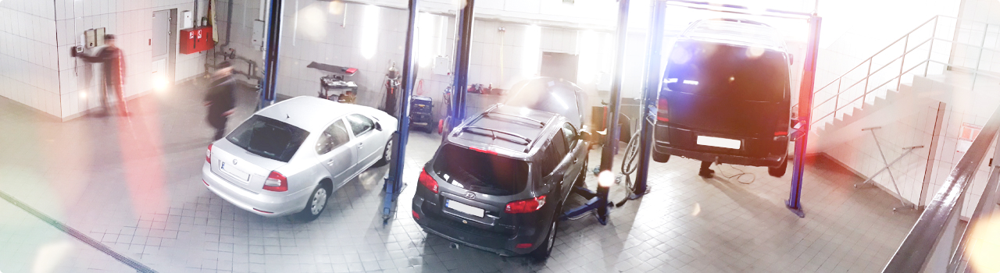

Наша місія — надавати професійні рішення для звичного ритму життя людей, які цінують автокомфорт та прагнуть жити на
повну.
Компанія Restart працює на ринку стартерів та генераторів понад 20 років.
Паралельно з гуртовими продажами агрегатів та компонентів на всій території України, компанія розвиває мережу сервісно-технічних центрів у Рівному та Луцьку.

Паралельно з гуртовими продажами агрегатів та компонентів на всій території України, компанія розвиває мережу сервісно-технічних центрів у Рівному та Луцьку.
Сьогодні в Компанії є 7 діючих сервісно-технічних центрів, що надають такі послуги:
- • діагностика, профілактика та ремонт стартерів та генераторів;
- • заміна компонентів агрегатів;
- • діагностика системи кондиціонування азотом;
- • заправка та дозаправка кондиціонера фреоном;
- • ремонт системи кондиціонування;